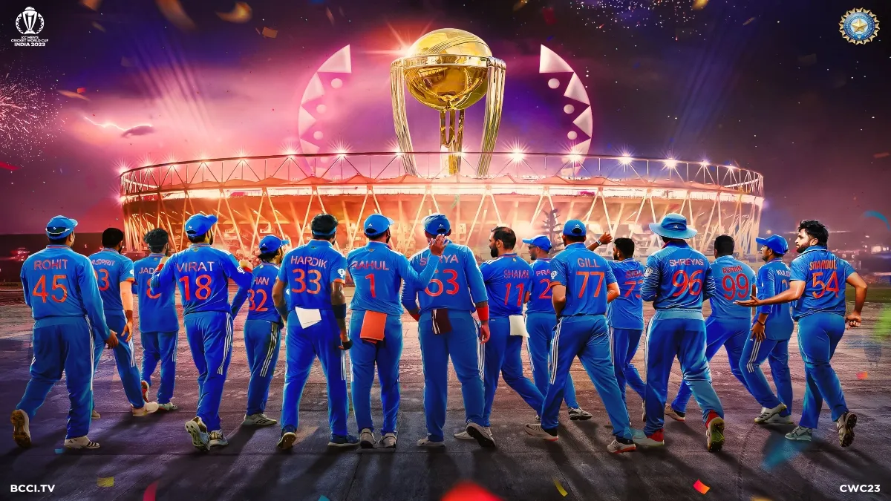
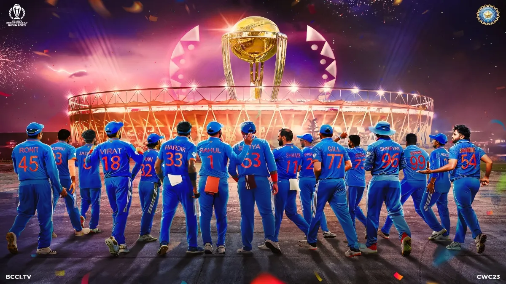

The sport of cricket has a known history beginning in the late 16th century England.
It became an established sport in the country in the 18th century and
developed globally in the 19th and 20th centuries.
International matches have been played since the 19th-century and
formal Test cricket matches are considered to date from 1877.
Cricket is the world's second most popular spectator sport after association football (soccer).
A cricket field or cricket oval is a large grass field on which the game of cricket is played.
Although generally oval in shape, there is a wide variety within this:
perfect circles, elongated ovals,rounded rectangles, or irregular shapes with little or no symmetry.
but they will have smooth boundaries without sharp corners, almost without exception.
here are no fixed dimensions for the field but its diameter usually varies
between 450 and 500 feet (140 and 150 m) for men's cricket,
and between 360 feet (110 m) and 420 feet (130 m) for women's cricket.
 
